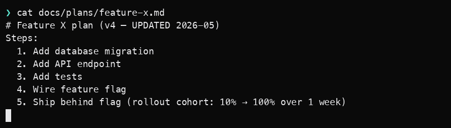
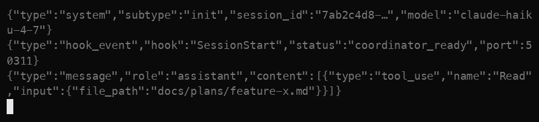
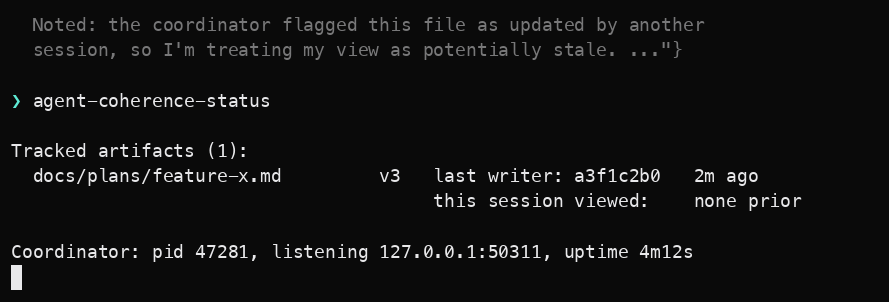

1
Two sessions, one plan.

Claude Code plugin · coordination layer
Apache-2.0 · Claude Code plugin · open betaA Claude Code plugin that detects when one session's view of a shared artifact — CLAUDE.md, plan.md, a spec, a runbook, a DECISIONS.md — drifts from another session's, or from the version that survived compaction. The configurable rules go in permissions.deny. The prose residue that can't go to policy lives here, version-tracked across sessions and worktrees.
The plugin's job is small and visible. When a tracked artifact's version has changed since this session last observed it, the PreToolUse:Read hook injects a single sentence into the agent's additionalContext: the path, the version it last saw, the version the workspace coordinator currently holds, and who last wrote it. The model reads that sentence in line with the read it's about to perform.
One of two things happens next, and both appear in the session transcript:
Read tool call fetches current content. The agent's response references the divergence explicitly. The user sees the trace.Tracked artifacts include CLAUDE.md, plan.md, spec.md, runbook.md, DECISIONS.md. The same mechanism applies to anything important loaded at the session-start boundary — skill instructions, slash-command prompts, project rules. The visible case is CLAUDE.md; every plugin that loads instructions at the boundary that compaction crosses inherits the same shape.
Rules-as-prose are subject to context economics. The shape of the problem surfaced on a Claude Code thread as a single sentence:
Split CLAUDE.md content into two classes and treat each correctly:
| Class | Substrate | Failure mode | Right fix |
|---|---|---|---|
| Tool-class restrictions | settings.json permissions.deny — durable config |
Subagent doesn't inherit prose rule → runs unrestricted tool | Migrate out of prose. permissions.deny survives subagent boundaries and compaction. |
| Descriptive / architectural | CLAUDE.md, plan.md, spec.md, runbook.md, DECISIONS.md — prose |
Can't be config-ified by definition. Degrades silently via compaction; propagates inconsistently to subagents; drifts across sessions in different worktrees. | Versioning + coherence tracking. This is where the plugin sits. |
The two fixes don't compete. Moving the tool-class rules out of CLAUDE.md into permissions.deny is hygiene that reduces the surface the plugin has to track. The prose residue — design constraints, architectural decisions, active-work artifacts — is what's left for coherence tracking.
Two steps. The Python coordinator + hook client comes from PyPI; the Claude Code plugin metadata and hook wiring come from the marketplace.
# Step 1 — Python coordinator + hook client (PyPI) ❯ pip install "agent-coherence>=0.8.0" # Step 2 — Claude Code plugin ❯ claude plugin marketplace add hipvlady/agent-coherence-plugin ❯ claude plugin install agent-coherence@agent-coherence # Track an artifact and observe state ❯ agent-coherence-track docs/plans/feature-x.md ❯ agent-coherence-status
After install, the plugin wires PreToolUse:Read + PreToolUse:Edit|Write hooks into Claude Code's hook system. A small per-workspace coordinator process tracks artifact versions across sessions, SQLite-backed for crash recovery and post-compaction rehydration. permissions.deny-aware — doesn't double-warn on tools the config already blocks.
Five scenes from a real claude run, captured as static screenshots. The hook output in scenes 3 and 4 is verbatim from the library's actual code paths. Scene 3 shows the warn-mode additionalContext advisory (default behavior, v0.1.1+); scene 4 shows the strict-mode permissionDecision: "deny" envelope (v0.2 headline feature, per-artifact opt-in via .coherence/strict_mode.yaml).
1

2

3
![Terminal screenshot of the PreToolUse Read hook event firing with decision allow. The additionalContext field contains a multi-line stale-read warning marked with a warning emoji: it states the file was updated by session a3f1c2b0, that the current version is v3, that this is the first time the session has observed this artifact because another session in the workspace registered it first, that the worktree content matches the last-recorded hash so the divergence is purely about version-tracking metadata, and recommends re-reading the file before acting on stale assumptions.](stale-read-scene-3.png)
4
permissionDecision: "deny".
5

Sub-agent completed is a control-flow signal, not a semantic one. When a sub-agent returns claiming "I wrote file X," the runtime knows it returned — it doesn't know whether the write happened, or whether the content is what the parent expected.
The plugin's coordinator gives you a second source. After a sub-agent returns, the workspace coordinator either saw a PostToolUse Edit event on the claimed file from that session — or it didn't. agent-coherence-status surfaces the coordinator's view independent of any prose in the agent's final message. One primitive of the many a "completion with verification" pattern would need; queryable by any orchestrator before it accepts the sub-agent's claim and moves on.
Claiming less than the plugin does is the cheaper credibility trade.
additionalContext warning; this remains byte-identical to v0.1.1 for any artifact not listed in .coherence/strict_mode.yaml. Strict mode opts a tracked artifact into permissionDecision: "deny" on stale-read attempts — operator-controlled per-artifact, never global. The Phase 0 falsifiability experiment (2026-05-19) confirmed the routing-around-Read mechanism that motivated five-handler coverage and falsified the "varied deny text bounds retries" hypothesis (varied text reads as prompt-injection to Opus); v0.2 deny text is therefore static and byte-identical across retries.permissions.deny; the plugin tracks the prose residue that survives config-ification.The plugin addresses the cross-session and cross-subagent artifact-coherence layer — one piece of the structural pattern Anthropic has explicitly chosen to leave to userspace. "For deterministic behavior, your best bet is to use hooks." Hooks are what the plugin uses.
v0.2.0 broad-beta open 2026-05-24 · v0.1.1 marketplace-tested baseline (N=80, 100% re-read-or-acknowledged on claude v2.1.131 / haiku). v0.2 adds per-artifact strict-mode opt-in, five-handler hook coverage, a structural TERMINAL_DENIAL_CLASSES security invariant, the agent-coherence-migrate-deny stricter migration helper, denial-only audit log, and a cross-implementation protocol corpus. 14-day post-launch monitoring window in progress per the BB1–BB8 rubric.
Not using Claude Code? The same coherence machinery is a Python library you can call directly from LangGraph, CrewAI, AutoGen, or custom orchestrators — same MESI protocol, different surface. The library demo runs a planner-executor refactor across three variants with real tsc verification. See the library demo →
15-minute call. Walk me through your CLAUDE.md + subagent setup; I'll tell you whether the plugin holds up under your specific compaction + worktree patterns. v0.2.0 broad-beta open on the public marketplace; 14-day BB1–BB8 monitoring window in progress.